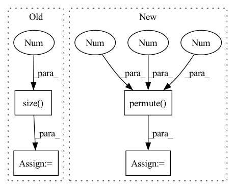

Pattern ID :30435
Before Change
masks = torch.argmax(masks[0], dim=1)
est_probs = est_probs[0]
est_masks = torch.argmax(est_probs, dim=1)
n_frames = est_masks.size(0 )
loss = nll_loss(torch.log(est_probs), masks).item()
test_losses.update(loss)
metrics = Metrics.get(est_masks, masks)After Change
logging.warn(ex)
continue
est_probs = est_probs.permute( 0, 2, 1 , 3 , 4 )
masks = torch.argmax(masks, dim=2)
est_masks = torch.argmax(est_probs, dim=1)
loss = nll_loss(torch.log(est_probs), masks).item() + lovasz_loss(est_probs, masks).item()
test_losses.update(loss)
metrics = Metrics.get(est_masks[0], masks[0])
test_metrics.update(metrics, n_objects[0].item())
video_name = video_name[0]
if test_writer is not None and idx < 3:
frames = frames[0]
n_frames = est_masks.size(1)
for i in tqdm(range(0, n_frames, cfg.TEST.VISUALIZE_EVERY),
leave=False,In pattern: SUPERPATTERN
Frequency: 4
Non-data size: 4
Instances Fragment ID: 90025564
Project Name: hzxie/rmnet
Commit Name: 6b23640154d46bbb1602d733d973dfff5eac88e0
Time: 2020-04-26
Author: root@haozhexie.com
File Name: core/test.py
M Class Name: AnonimousClass
N Class Name: AnonimousClass
M Method Name: test_net(5)
N Method Name: test_net(5)
M Parent Class:
N Parent Class:
M File Name: core/test.py
N File Name: core/test.py
M Start Line: 77
M End Line: 99
N Start Line: 54
N End Line: 101
Before Change
def forward(self, x):
// in: N x d x m x m
// out: N x (d * basis) x m
N = x.size(0 )
m = x.size(-1)
diag_part = torch.diagonal(x, dim1=2, dim2=3)
max_diag_part = torch.max(diag_part, 2)[0].unsqueeze(-1)
max_of_rows = torch.max(x, 3)[0]After Change
def forward(self, x):
b, n, _, in_features = x.size()
basis = 5
diag_part = torch.diagonal(x, dim1=1, dim2=2).permute(0 ,2 ,1 )
max_diag_part = torch.max(diag_part, 1)[0].unsqueeze(1)
max_of_rows = torch.max(x, 2)[0]
max_of_cols = torch.max(x, 1)[0]
max_all = torch.max(torch.max(x, 1)[0], 1)[0].unsqueeze(1)
op1 = diag_part
op2 = max_diag_part.expand_as(op1)
op3 = max_of_rows
op4 = max_of_cols
op5 = max_all.expand_as(op1)
output = torch.stack([op1, op2, op3, op4, op5], dim=2)
assert output.size() == (b, n, basis, in_features), output.size()
return output.view(b, n, basis*in_features)
Fragment ID: 90025544
Project Name: mlelarge/graph_neural_net
Commit Name: dcd62781238a3f3db3e12a7b3006162c583e2e4c
Time: 2020-02-25
Author: waissfowl@gmail.com
File Name: models/layers.py
M Class Name: Features_2_to_1
N Class Name: Features_2_to_1
M Method Name: forward(2)
N Method Name: forward(2)
M Parent Class: nn.Module
N Parent Class: nn.Module
M File Name: models/layers.py
N File Name: models/layers.py
M Start Line: 105
M End Line: 119
N Start Line: 107
N End Line: 123
Before Change
self.fc = nn.Linear(num_layers * hidden_size, 1)
def forward(self, x):
batch_size = x.size(0 )
embedding = self.dropout(self.embed(x))
conv_in = embedding.permute(0, 2, 1)
conv_out = self.conv(conv_in)
values, indices = conv_out.max(dim=-1)After Change
self.local2attn(rnn_out) + self.global2attn(global_rnn_out)
).permute(1, 0, 2)
alpha = F.softmax(attention.matmul(self.attn_scale), dim=-1)
rnn_out = rnn_out.permute(1 , 0 , 2 )
memory = (alpha * rnn_out).sum(dim=1)
output = self.fc(memory).squeeze(1)
return output
Fragment ID: 90025739
Project Name: jaketae/deep-malware-detection
Commit Name: e2f5ae102005c60e7e0db3dc31a8d9c23fce276b
Time: 2020-11-26
Author: jaesungtae@gmail.com
File Name: models.py
M Class Name: AttentionRCNN
N Class Name: AttentionRCNN
M Method Name: forward(2)
N Method Name: forward(2)
M Parent Class: nn.Module
N Parent Class: nn.Module
M File Name: models.py
N File Name: models.py
M Start Line: 186
M End Line: 194
N Start Line: 196
N End Line: 206
Before Change
key_states = key_states.view(*proj_shape)
value_states = value_states.view(*proj_shape)
src_len = key_states.size(1 )
attn_weights = torch.bmm(query_states, key_states.transpose(1, 2))
// q_t is [batch, seq_length, n_heads, dim_per_head]
import ipdb; ipdb.set_trace()After Change
attn_output = torch.bmm(attn_probs, value_states.view(*proj_shape))
// w_t is [batch, seq_length, n_heads, seq_length]
w_t = attn_output.view(bsz, self.num_heads, tgt_len, self.head_dim).permute(0 , 2 , 1 , 3)
// [batch, seq_length, n_heads, seq_length]
w_tr_matmul = torch.matmul(w_t, relation_v_embeds)
Fragment ID: 90025541
Project Name: joaolages/ratransformers
Commit Name: 87d3c27f618c060b396039f71734d515d3343a4b
Time: 2022-02-11
Author: joaop.glages@gmail.com
File Name: src/ratransformers/bart.py
M Class Name: BartRelationalAttention
N Class Name: BartRelationalAttention
M Method Name: forward(7)
N Method Name: forward(7)
M Parent Class: BartAttention
N Parent Class: BartAttention
M File Name: src/ratransformers/bart.py
N File Name: src/ratransformers/bart.py
M Start Line: 43
M End Line: 138
N Start Line: 43
N End Line: 139